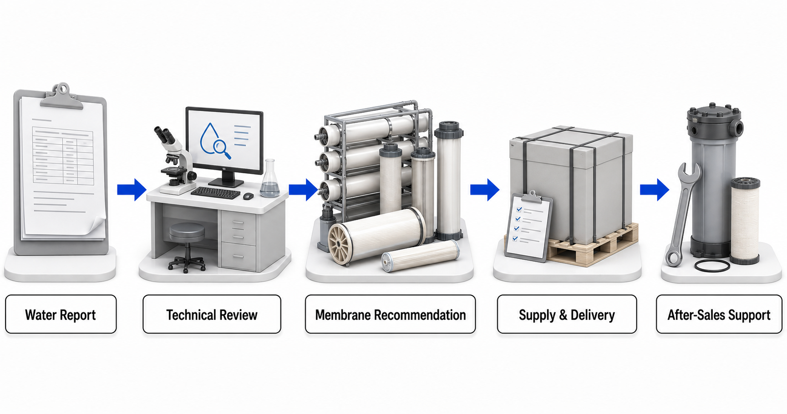

Reverse osmosis (RO)
RO is considered when broad dissolved-salt reduction or higher-purity product water is required. Feed chemistry, pressure, pretreatment and concentrate conditions define the practical boundary.
Yuchen Water is a Vontron membrane distributor and dealer. We supply membrane materials for residential, commercial and industrial projects and provide related equipment technical support. This center explains membrane categories and applications without asking buyers to select a product model. A current water or process-fluid report, treatment target and operating brief come first.

Membrane categories describe separation roles. They are not substitutes for a water report or a final material recommendation.
RO is considered when broad dissolved-salt reduction or higher-purity product water is required. Feed chemistry, pressure, pretreatment and concentrate conditions define the practical boundary.
NF can support selective dissolved-species and organic separation. The retained and permeating targets, pH, temperature and cleaning conditions must be stated.
UF and MBR roles commonly focus on suspended, colloidal and biological material. They may be final barriers or pretreatment before tighter membrane stages.
Seawater and brackish-water applications require salinity, ion, temperature, intake, pretreatment and high-pressure-equipment review before material selection.
Start from the source and intended use. Each path leads to a report checklist and a technical discussion, not to an automatic model choice.
Review salinity, ions, temperature, intake variability, biological risk, target permeate and concentrate constraints.
Check hardness, alkalinity, silica, iron, manganese, gases, salinity and locally relevant contaminants.
Confirm disinfectants, organics, hardness, taste objectives, required output and the downstream use.
Describe the generating process, variability, organics, oils, metals, solids, reuse destination and concentrate handling.
Provide a complete ion balance, minor scale risks, organics, variability and the intended role of the membrane step.
State the complete composition and separation target. Membrane-material support is not a promise of a complete extraction process or recovery result.
Define retained components, product-quality targets, sanitation, pH, temperature, cleaning and evidence requirements.
Match inlet water, demand, pressure, purifier architecture, pretreatment and replacement access rather than a capacity label.
Website content provides category-level technical education. A complete report and confirmed operating brief are required before final material, equipment or performance decisions. Yuchen Water does not claim to manufacture Vontron membranes and does not promise flux, recovery, lifetime, selectivity or project results for an unreviewed stream.
Learn how feed-water chemistry, treatment goals and operating conditions guide the choice between RO, NF and UF membrane categories.
Read the guide →Understand the report data, pretreatment and equipment questions that come before a seawater or brackish-water membrane recommendation.
Read the guide →Plan groundwater and well-water membrane treatment from a complete analysis of minerals, metals, gases, organics and operating goals.
Read the guide →See how wastewater history, reuse targets and pretreatment risks determine the roles of UF, NF and RO in an industrial reuse project.
Read the guide →Prepare the chemistry, variability and process-target information needed before discussing membrane materials for high-salinity wastewater or ZLD-related support.
Read the guide →Learn what composition and process-target data are needed before discussing NF, RO or UF membrane materials for salt-lake brine and lithium-related fluids.
Read the guide →Choose residential and light-commercial RO membrane materials from water quality, daily demand, equipment compatibility and service conditions rather than a model label.
Read the guide →Understand how activated carbon can support oxidant and organic control before RO, and why carbon selection still depends on water analysis and system conditions.
Read the guide →Understand how activated carbon can support oxidant and organic control before RO, and why carbon selection still depends on water analysis and system conditions.
Read the guide →The official link is provided as a primary reference for current membrane categories and documents. Product information may change, so the exact material and current official document are confirmed during the technical review. Vontron official industrial membrane overview · Vontron official UF membrane overview
Because source names and TDS do not describe all scaling, fouling, compatibility and treatment-target risks.
No. It helps buyers prepare the correct information; the final recommendation follows report and operating-condition review.
Yes. The main supply is membrane materials, with related support for pretreatment, housings, pumps, filtration, controls, commissioning guidance and replacement planning.